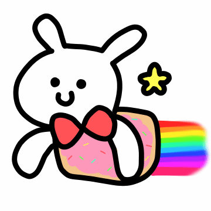

토깽이 유형 테스트

테스트 시작하기
문제
하다
한다
이름
설명
환상의 짝꿍 토깽이 유형 모습
테스트 다시하기
개발자 블로그 바로가기
mbti제작 조코딩 강의 바로가기
 개발자 블로그 바로가기
mbti제작 조코딩 강의 바로가기
개발자 블로그 바로가기
mbti제작 조코딩 강의 바로가기
개발자 블로그 바로가기
mbti제작 조코딩 강의 바로가기
개발자 블로그 바로가기
mbti제작 조코딩 강의 바로가기